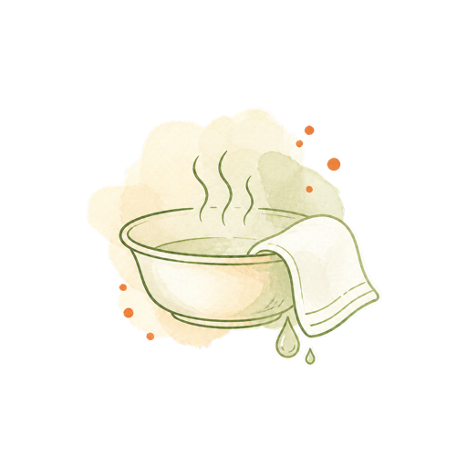

健康観察・体調管理
血圧・体温などの測定と全身の観察で、変化に早く気づきます。服薬確認もお手伝いします。
血圧・体温などの測定と全身の観察で、変化に早く気づきます。服薬確認もお手伝いします。

清拭・入浴・洗髪や排泄のケアで、清潔で快適な療養生活を支えます。
主治医の指示に基づく創傷処置・点滴・カテーテル管理など、医療依存度の高い療養を支えます。
住み慣れた家で穏やかに過ごせるよう、痛みや不安をやわらげ、ご本人・ご家族に寄り添います。
ご本人の気持ちに寄り添い、穏やかに過ごせるよう、ご家族の対応も一緒に考えます。
ご自宅での腹膜透析を、主治医と連携して支えます。手技の指導から出口部ケア、トラブル時の対応まで。
領域ごとに絞り込んでご覧いただけます。ケアマネジャー・医療機関の方の紹介判断にもお使いください。
要相談 …対応の可否がご本人の状態や体制によって変わるため、事前にご相談ください。上記以外の処置についても、まずはお問い合わせください。
年齢や病気の種類にかかわらず、主治医が訪問看護を必要と認めた方が対象です。
エリアの境目にお住まいの方も対応できる場合があります。まずはお問い合わせください。
訪問 9:00〜17:30 ／ 指定番号 奈良市 第2960199442
対応可否のご確認から、費用の目安まで。どんな小さなことでもお気軽にご相談ください。